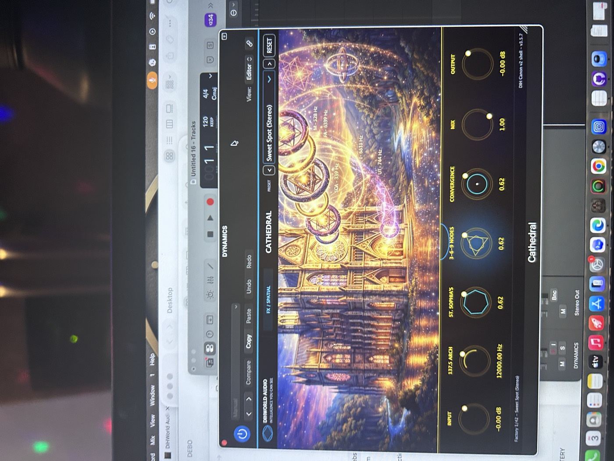
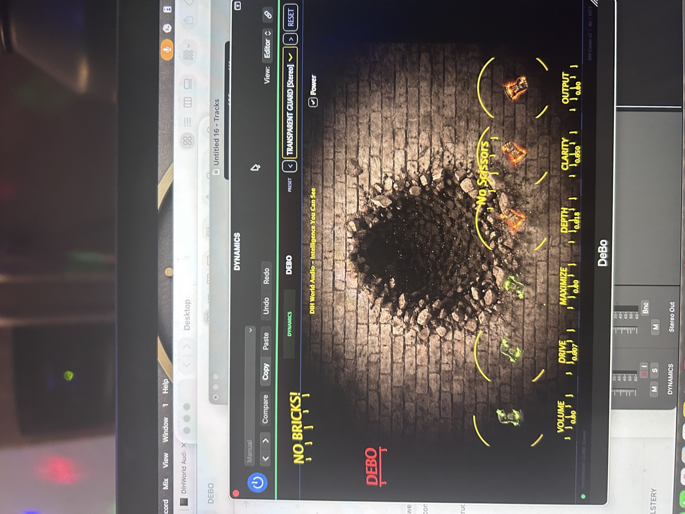
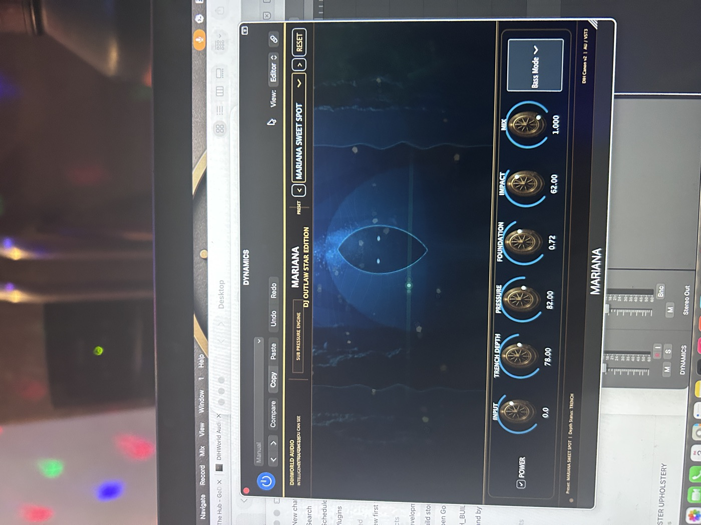
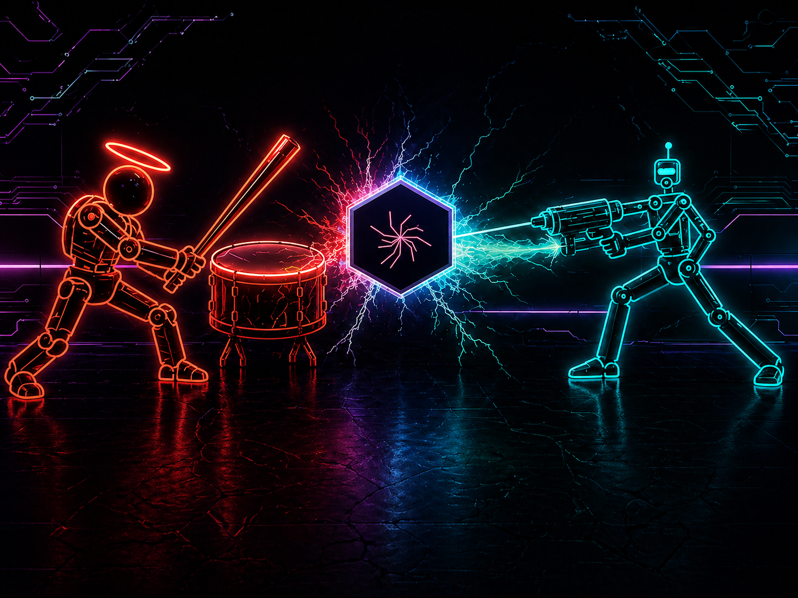

Core Bundle Proof
SacredVerb, Cathedral, DEBO, DrumKrushGlue, and Mariana moving from space to protection, drum glue, and low-end foundation.
DIHWorld Audio - 42-plugin AU/VST3 suite
Intelligence you can hear. A current 42-plugin mixing ecosystem built around harmonic structure, spatial intelligence, low-end authority, dynamics, color, and mastering containment.
Hear the engine
Every storefront demo should answer three things fast: what changed, why it matters, and where the processor belongs in a real session.
SacredVerb, Cathedral, DEBO, DrumKrushGlue, and Mariana moving from space to protection, drum glue, and low-end foundation.
GOLD -> AEGIS_NOVA -> SILVER for source presence, protection, and mic-source polish in the full mix.
DIH_DRUM_MORPHER -> BALLPARK -> DRUMKRUSHGLUE against Mariana -> NTRPL -> Monolith for impact and foundation.
Clean and loud master paths: SPHYNX, MAAT, PLATINUM, IMHOTEP or HORIZON_X, ANKH, and SESHAT.

Solfege bands, sacred 3-6-9 modulation, chamber modes, and live source meters give the reverb its own authored workflow.

Architectural controls, canon nodes, convergence, and full visual identity make Cathedral a premium spatial processor.

A focused guard processor with preset states, no-brick protection language, and a distinctive dynamics interface.

Sub pressure, trench depth, foundation, impact, and bass mode controls give the Core Bundle its low-end authority.
Featured core
Five practical entry-point processors for real sessions: space, architecture, dynamics control, drum glue, and low-end foundation.

Expressive harmonic space with emotional decay behavior, smooth musical tail evolution, and clean mix integration.
Architectural space modeling reverb for dimensional environments, clear reflection structure, and controlled diffusion.
Dynamic ceiling control and mix protection for clean output behavior without destroying musical movement.

Parallel drum energy engine that blends compression, saturation, and glue into one controlled density system.
Deep low-end foundation and sub-pressure control for bass sources, 808s, kick weight, and full mix translation.
Bundle strategy
The Core Bundle is the practical first purchase. Companion bundles let customers expand by workflow instead of buying a confusing pile of individual processors.
SacredVerb, Cathedral, DEBO, DrumKrushGlue, and Mariana. The entry bundle for space, drum force, clean control, and low-end authority, with Mac DMG/PKG and Windows x64 Core installer prepared.
GOLD, SILVER, WPR, AEGIS_NOVA, TRIPLER, and EchoLocate. Built for lead vocals, stacks, mic color, and source placement.
Mariana, Monolith, Depth Boost Pro, and NTRPL. For bass guitar, 808s, synth bass, kick foundation, and low-end translation.
SPHYNX, MAAT, PLATINUM, HORIZON_X, IMHOTEP, ANKH, and SESHAT. A full print path for balance, lift, structure, containment, and analysis.
APIS, PTAHTUBE, KHEPRI, and SOVEREIGN. Harmonic body, tube color, tape emergence, and authority-driven analog tone.
DEPTH IMPACT HYBRID, PARALLAX, NSR, NTRSTLLR, Cathedral, and SacredVerb. The bus-focused expansion for depth, motion, and living space.
DIH_DRUM_MORPHER and BALLPARK. Focused drum creation, morphing, bounce, and kit movement without folding Dynamics tools into the drum family.
THOTH, TEHUTI, AU, SLOTMACHINE, ARCHAEOLOGIST_X, and SERQET. For harmonic writing, recovery, width contour, and intentional transformation.
Proposed launch pricing
Draft for team review. Start with one processor, build around a workflow, or unlock the complete 42-plugin collection. Every card shows the proposed launch price beside its regular value.
Utility tools start at $29, standard processors at $59, signature processors at $79, and flagship spatial processors at $99.
Proposed launchSacredVerb, Cathedral, DEBO, DrumKrushGlue, and Mariana—the essential space, control, glue, and low-end system.
Save $200Thirteen focused families priced by plugin count, processor depth, and the workflow they complete.
Build by workflowAll 42 current DIHWorld Audio plugins, the complete installer path, manuals, and current support downloads.
Save $600Includes the Complete 42 Collection, first-look previews of products in development, one monthly Zoom technical-support session, and 10% off future products.
10% member savingsSacredVerb, Cathedral, DEBO, and Mariana are running in-session with finished visual systems, controls, presets, and meters.
The catalog is organized into 13 current families with signed, notarized macOS artifacts and a Windows bulk installer.
Families and bundles are priced by role: flagship spatial, signature Core tools, full mix workflows, and lifetime access.
Current canon
The store category map follows the current ANKH family manifest. Older 10-family reference language stays available as education, not catalog authority.
Demo center
Use fast A/B clips, then place the same sound in a full mix. Keep the loudness honest so tone, movement, and placement do the selling.
The Complete 42
The official visual documentation now lives inside DIHWorldAudio.com. Search all 42 processors, open the real interface artwork, read every exposed control, follow signal-flow and sidechain diagrams, and download the customer or technical manual for each family.

Interface · controls · presets · signal flow · workflows · documents
Downloads & documents
Open the visual manuals, download the customer guides and templates, and return to the same DIHWorld Audio home for protected Mac and Windows delivery.
Start with Cascading Bus, 7Bus, Family Affair, Better Buses, and the current DIHWorld Audio workflow maps.
The Complete 42 connects every interface illustration to searchable controls, signal flow, workflows, presets, and family documents.
Mac AU/VST3 and Windows VST3 products belong in protected customer delivery, with manuals and support always available here.
Support
Audio processing should behave like a system, not a collection of effects. Every plugin occupies a role inside structured signal flow: space, dynamics, control, harmonic shaping, and low-end architecture.
Customer portal
WooCommerce accounts can become the customer hub once pricing, payment gateways, download protection, and licensing are connected.